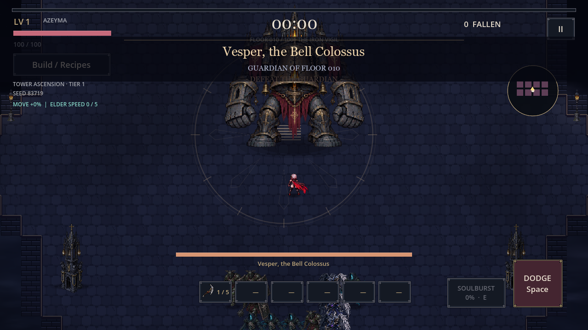

MICHAEL GUNN / HOUSTON, TEXAS
Systems experience.Ideas in development.
I bring a background in Paycom configuration, HRIS support, and customer operations to my work on web and game projects.
01 / SELECTED PROJECTS
What I’m working on
WEB PLATFORM Development preview
GunnTrax
A contractor directory connecting local trades and remote freelancers with project opportunities.
The preview brings together job posting and search, contractor profiles, portfolio links, applications, and employer review in separate employer and contractor portals.
View project preview ↗
Preview access is restricted. Contact me to discuss a walkthrough.
FROM PROJECT TO APPLICATION
01 Post a project Employers describe the work, location, and budget.
02 Show the work Contractors build a profile and link portfolio samples.
03 Apply and review Contractors apply; employers review the details.

Gameplay capture from the Windows development build
GAME DEVELOPMENT Playable Windows build
EsperShattered Sky
A survival-action game following Azeyma through a ruined world, with automatic weapons, evolving loadouts, tower progression, and alternate endings.
The project includes combat and animation systems, guardian encounters, permanent progression, and save/resume functionality.
Ask about the game ↗
02 / PROFESSIONAL EXPERIENCE
A foundation in My work has centered on accurate data, clear communication, and helping people resolve operational problems.
JUNE 2021 – JANUARY 2025
Paycom Product Setup Specialist Senior
Supported payroll and benefits configuration, researched data discrepancies, and helped clients troubleshoot system processes.
MyReports and Report Center reporting CSV imports, exports, and data validation Configuration testing and reconciliation support Specialist mentoring and implementation workflows NOVEMBER 2025 – AUGUST 2026
City of Houston 911 Operator
Handled time-sensitive calls, verified critical information, and maintained accurate records while managing changing priorities.